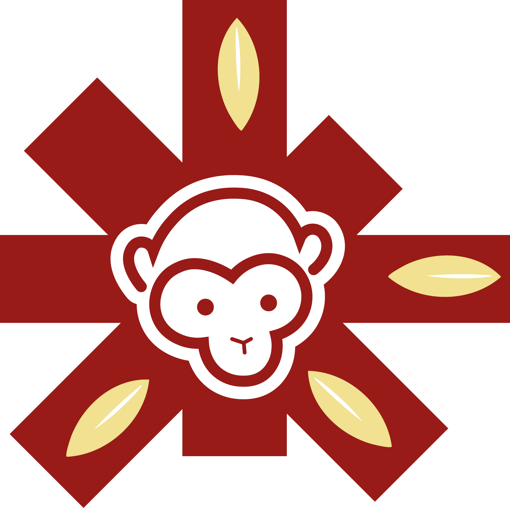

Proyecto
Semestral
Proyecto
Semestral

Una mirada más allá del conflicto.
Editorial · Cultura · Diseño Estructural
Tera House nace como respuesta a un mercado cultural saturado de piezas genéricas. Somos una editorial de nicho que trabaja con causas invisibilizadas, transformándolas en objetos coleccionables de alto valor percibido.
No hacemos brochures institucionales. Hacemos diseño editorial premium y experiencias web gamificadas para causas que merecen ser recordadas — no solo archivadas.

Escanea para ver
nuestro Manual de Marca
Escanea para ver el
Manual de Marca
NUKAK.


Es un universo inmersivo construido desde cero. Un proyecto de código puro — sin frameworks ni plantillas — que demuestra que el diseño web puede ser tan editorial como una publicación impresa.
Estructura semántica de 9 páginas interconectadas. Accesible, indexable, optimizada.
Animaciones parallax, glassmorphism, paleta indígena, tipografías curadas. Zero frameworks.
Juego de supervivencia, Turn.js para previsualizador, lógica de e-commerce y scoring de decisiones.
La revista Nukak propone una mirada editorial que trasciende la narrativa del conflicto, enfocándose en la cultura y la identidad de la comunidad.
A través de una maquetación basada en retícula modular, una jerarquía tipográfica clara y un uso protagónico de la imagen, se construye una experiencia visual que equilibra información y narrativa. El resultado es una pieza que no solo comunica, sino que también construye memoria visual contemporánea.